User Guide for Informix#
Introduction#
Aurreum Data Protection Suite (ADPS) provides the capability for the backup and restore of Informix databases. This guide introduces how to properly use ADPS to back up and restore Informix databases.
Features#
Feature |
Description |
|---|---|
Backup source |
Database, log |
Backup type |
Full backup: Back up all online and non-temporary storage spaces and logical logs, including onconfig, sqlhosts, ixbar, and oncfg files. It is a level 0 backup. |
Backup target |
Standard storage pool, de-duplication storage pool, local storage pool, tape library pool, object storage service pool, LAN-Free pool |
Backup compression |
None, fast, tunable |
Channels |
A positive integer between 1-255 |
Backup schedule |
Immediate, one-time, minutely, hourly, daily, weekly, monthly |
Backup Tail-Log |
Back up logical log files from disks to storage media before a restore job is executed |
Restore type |
Timepoint restore: Restore the database to a specific point-in-time state. |
Restore location |
Original path, different host |
Restore granularity |
Entire instance |
Restore to different hosts |
Restoring to a different host requires the same operating system version, same database version, and same instance name. |
Pre/Post action |
The pre action is executed after the job starts and before the resource is backed up or restored. The post action is executed after the resource is backed up or restored. |
Speed limit |
Limit data transfer speed or disk read and write speed within different periods |
Reconnection time |
The job continues after the abnormal reset occurs in the network within the set time. The set time is 10 minutes by default. |
Stop jobs |
Stop the backup and restore jobs |
Storage pool replication |
Replicate backup sets from the source storage pool to another pool |
Restore from target pools |
Restore backup sets from the target storage pool |
D2C |
Back up data directly to object storage |
D2T |
Back up data directly to tape library |
LAN-Free |
Back up to and restore from LAN-Free storage pools |
Modify the backup source and target |
Modify the backup source and backup target of a job |
IPv6 |
Transfer and manage data over IPv6 network |
Install and Configure Agent#
Verify Compatibility#
ADPS supports the backup and restore of Informix single instance. Before deploying the agent, check whether the operating system (OS) and database version are supported. See the followings for supported database versions:
Informix 11.50/11.70/12.10/14.10
Download Agent Package#
Open a browser and log in to ADPS as the admin. Click Resource -> Install Agent icon. You can download the installation packages according to your needs.
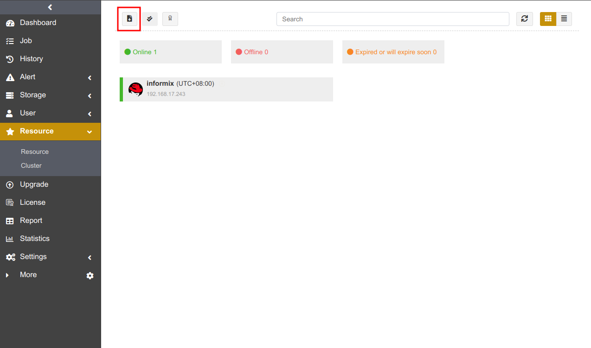
Install and Configure Agent on Windows#
Download Windows Installation Package#
Select Windows and click Download Windows agent.
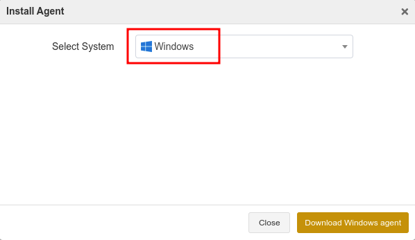
Install Agent on Windows#
Upload the installation package to the target host.
Double-click the package to install it according to the setup wizard and click Next.
This installation package is a collection of components. It checks the database resources, files, or applications installed on the host by default. Select the Informix component and click Next.
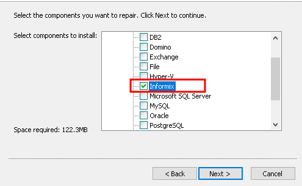
Set the Backup Server Host, Backup Server Port, and Access Key. Click Next.
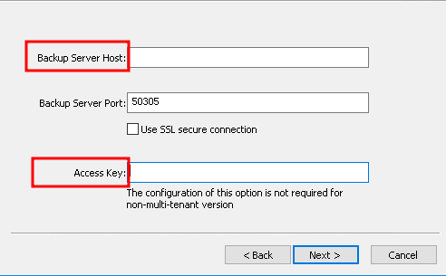
Select Destination Folder and click Next to install the software. Wait for the installation to complete.
Install and Configure Agent on Linux#
Select Linux as the system and Informix as the module. Copy an installation command.
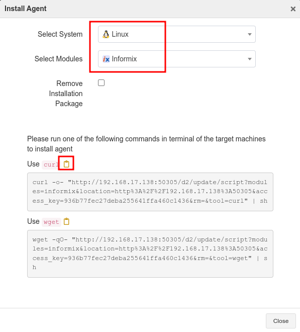
Paste the command on the command line and press Enter to execute the installation.
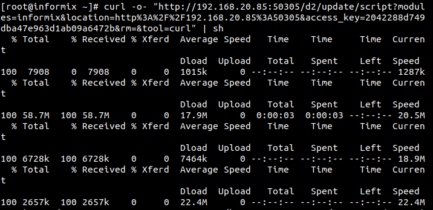
Check Successful Installation#
After the successful installation, log in to ADPS as the admin and see that the host is on the Resource list.
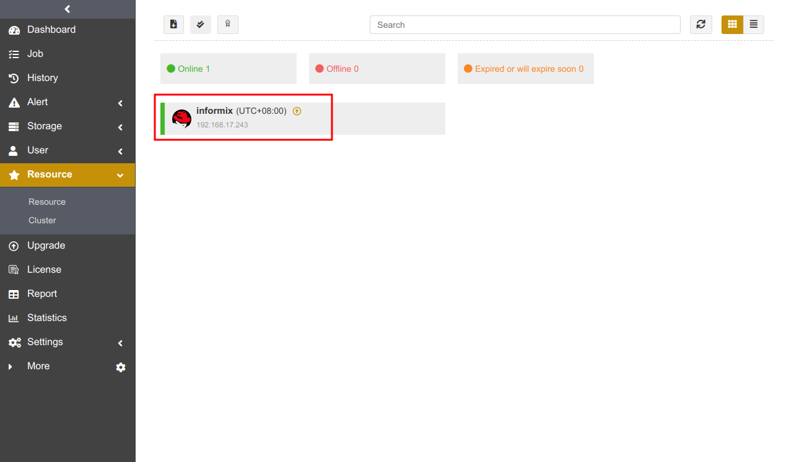
Before You Begin#
Check Database State#
Check the Informix instance state. The Informix instance should be in the “On-Line” state for backup and restore.
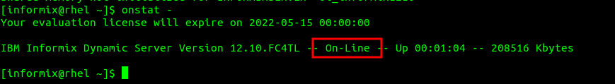
Check Resource#
Log in to ADPS as the operator and go to Resource. You can see the activated and authorized resource on the list and its state is “Online”. If the resource is not available, please check Activate License and Assign Authorization.
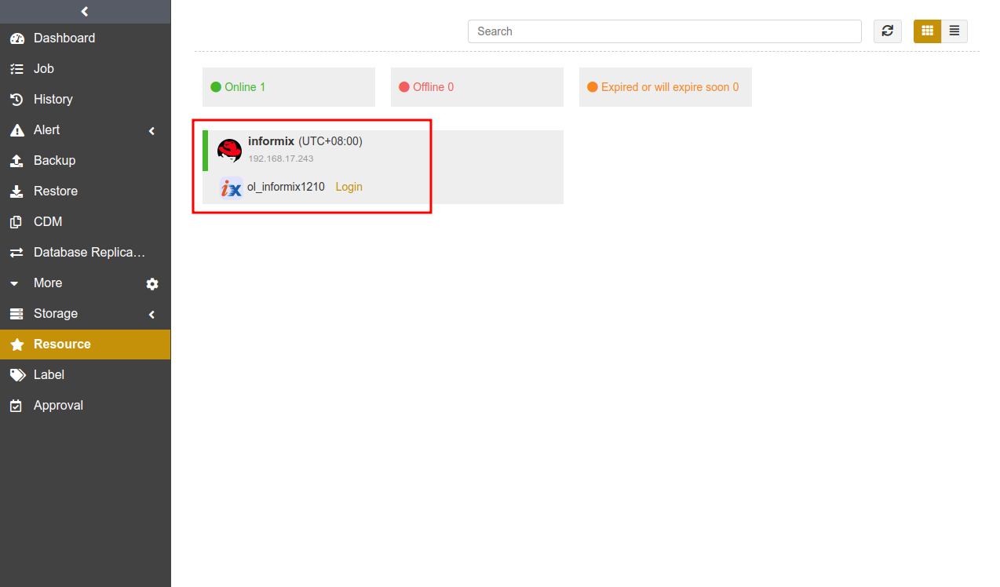
Check Storage Pool#
Log in to ADPS as the operator, go to Storage Pool, and verify there is any storage pool available. If a storage pool is not present, please contact the admin to create one and assign permissions to the operator.
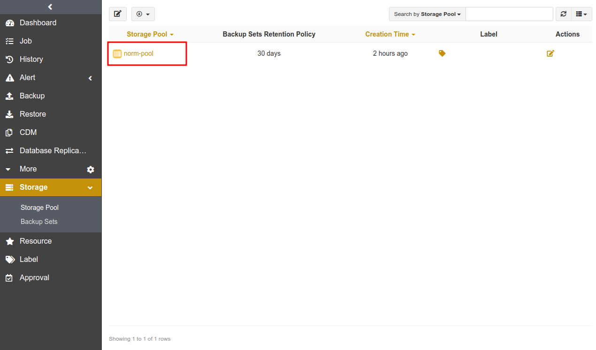
First Time Login#
Before creating the first Informix backup and restore, you need to Login to Informix first.
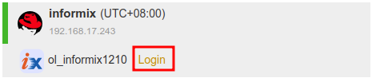
You must have the privileges of CONNECT, RESOURCE, and DBA to log in to Informix. You will need to log in to Informix again if the password is changed; otherwise, the jobs will fail.
The Agent supports using ODBC or DBACCESS to access Informix databases:
If you have installed Informix CSDK (Client Software Development Kit), use ODBC access mode. See Configure the Agent Access Mode for the specific configuration.
If Informix CSDK (Client Software Development Kit) is not installed, you can use the DBACCESS access mode. See Configure the Agent Access Mode for the specific configuration.
Enter the User and Password. Click Login.
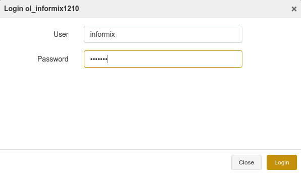
Note:
Informix must be online for successful login; otherwise, the login will fail even if the username and password are correct.
If you use ODBC to access Informix 12.10 on Windows, follow the configuration steps below before you log in.
Modify the file in C:\Program Files\IBM Informix Software Bundle\etc\sqlhosts as the follow:
Change the HostName of the instance “ol_informix1210” to 127.0.0.1
Launch Setnet32, click the Server Information tab and fill in the display options according to the sqlhosts file. See below:
Informix Server: ol_informix1210 (Instance name)
Host Name: ‘*’127.0.0.1 (The ‘*’ sign cannot be missing.)
Protocol Name: olsoctcp
Service Name: ol_informix1210
After the modification, click Make Default Server.
Restart the Informix instance service.
Open Windows Start meun, select IBM Informix Client SDK program, and click ConnectTest Demo to test the successful connection.
Create Backup Jobs#
This chapter introduces how to back up the Informix databases.
Prerequisites#
You have installed the agent. For installation, please refer to Install and Configure Agent.
You have activated the agent and assigned the authorization. For details about the activation and authorization, see Activate License and Assign Authorization.
Log in to ADPS as the operator.
Create Full Backup Jobs#
Informix full backup allows for database instance backup but not a single database backup. It backs up all online, non-temporary storage space and logical logs, as well as onconfig, sqlhosts, ixbar, and oncfg files. Informix full backup corresponds to the Level-0 backup.
(1) Click Backup. Select the Informix host and instance.
(2) Select Full Backup as the Backup Type. Select the databases.
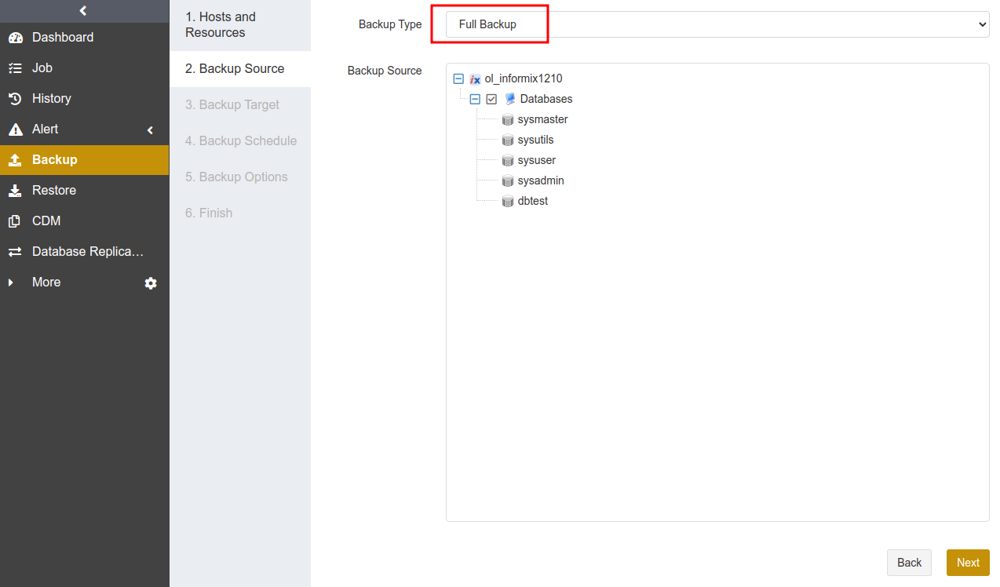
(3) Select Backup Target. You can choose standard storage pools, de-duplication storage pools, tape library pools, object storage service pools and LAN-Free pools.
Note:
It is not supported to store full backups, incremental backups/cumulative incremental backups and log backups in different storage pools.
Perform a full backup to the storage pool before using it for Informix backups.
(4) Go to Backup Schedule to set the execution time of the backup job. For details, see Backup Schedule Operation. It is generally recommended to run a full backup on a weekly basis.
(5) Set Backup Options, including common options and advanced options.
Common options:
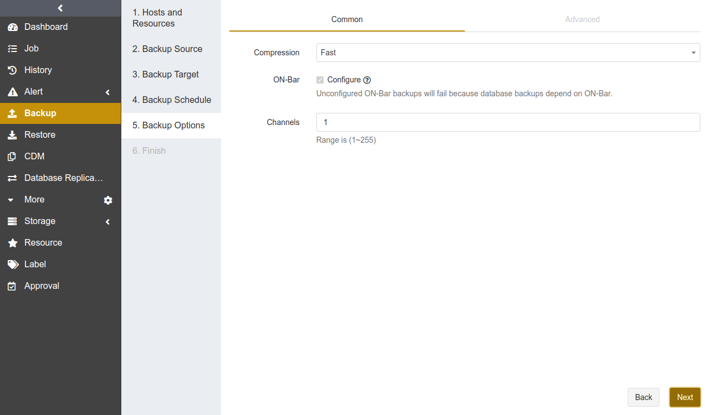
Compression: Fast is enabled by default.
None: No compression during the backup.
Tunable: You can customize the compression level. This option requires an activated feature of Advanced Compression.
Fast: Use the fast compression algorithms during the backup.
On-Bar: When you run an Informix backup job for the first time, On-Bar will be configured by default and a full backup job will be executed. Configuring On-Bar is an one-time operation that is only required for the first backup. If your Informix version is lower than 12.10, the database will be shut down and be restarted during the On-Bar configuration, and it is recommended that you schedule job execution in idle business time. On-Bar configuration modifies the following values in $INFORMIXDIR/etc/onconfig file: BAR_BSALIB_PATH, BAR_MAX_BACKUP, and LTAPEDEV.
Channels: Used to improve backup efficiency. The default value of Channels is 1 and the range is 1 to 255. For details, refer to Channel Number Configuration.
Advanced options:
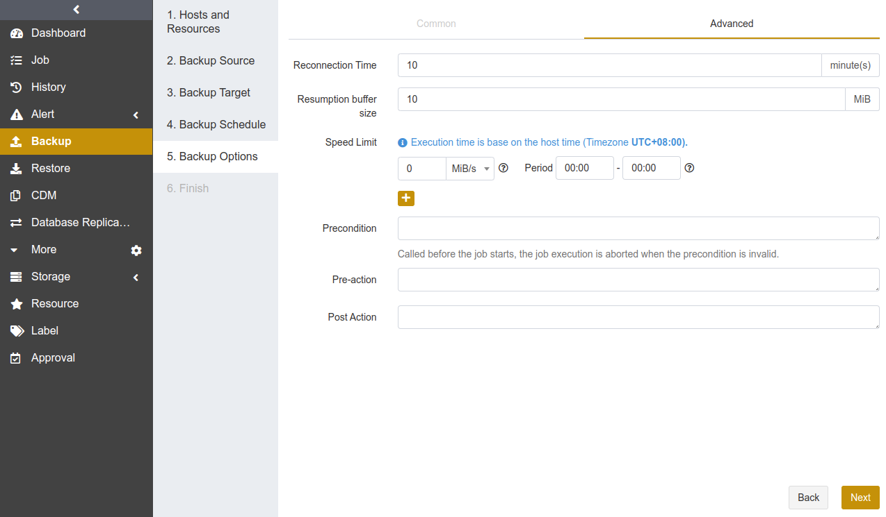
Reconnection time: The job continues after the abnormal reset occurs in the network within the set time. The value can be 1 to 60. The unit is minute(s).
Speed limit: Set the limit for data transfer speed or disk read and write speed. The unit can be MiB/s or KiB/s. Click the ‘’+‘’ icon to add limits at different times.
Precondition: The precondition is checked before the job starts. The job execution is aborted when the precondition is invalid.
Pre/Post action: The pre action is executed after the job starts and before the resource is backed up or restored. The post action is executed after the resource is backed up or restored.
(6) Set Job Name, check whether the job information is correct. Click Submit.
Create Incremental Backup Jobs#
An incremental backup is created based on a full backup. It only backs up data that has changed since the last backup, including all online, non-temporary storage space and logical logs, as well as onconfig, sqlhosts, ixbar, and oncfg files. Informix incremental backup corresponds to the Level-2 backup. It is recommended to create full backup jobs regularly (such as weekly), or create incremental backup jobs at short intervals (such as daily).
Creating an incremental backup job is the same as creating a full backup job. Select Incremental Backup as the backup type.
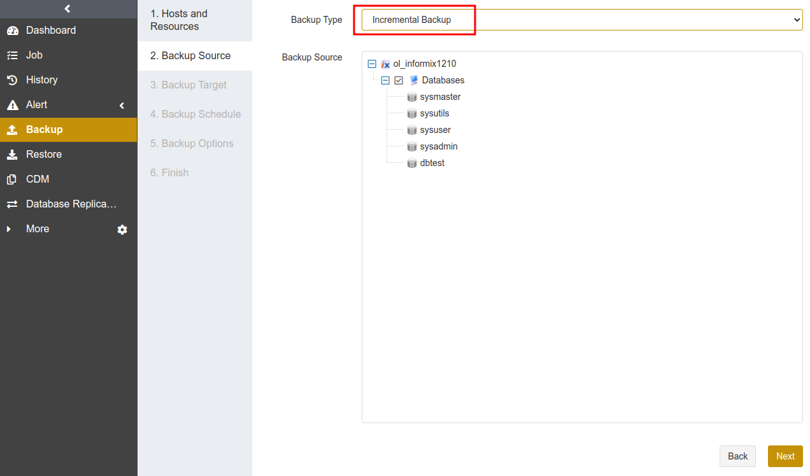
Note:
If the database has never been fully backed up, or has not been fully backed up after the restore, the first incremental backup will be run as a full backup by default.
Create Cumulative Incremental Backup Jobs#
A cumulative incremental backup is created based on a full backup. It only backs up data that has changed since the last full backup, including all online, non-temporary storage space and logical logs, as well as onconfig, sqlhosts, ixbar, and oncfg files. Informix cumulative incremental backup corresponds to the Level-1 backup. It is recommended to create full backup jobs regularly (such as weekly), or create cumulative incremental backup jobs at short intervals (such as daily).
Creating a cumulative incremental backup job is the same as creating a full backup job. Select Cumulative Incremental Backup as the backup type.
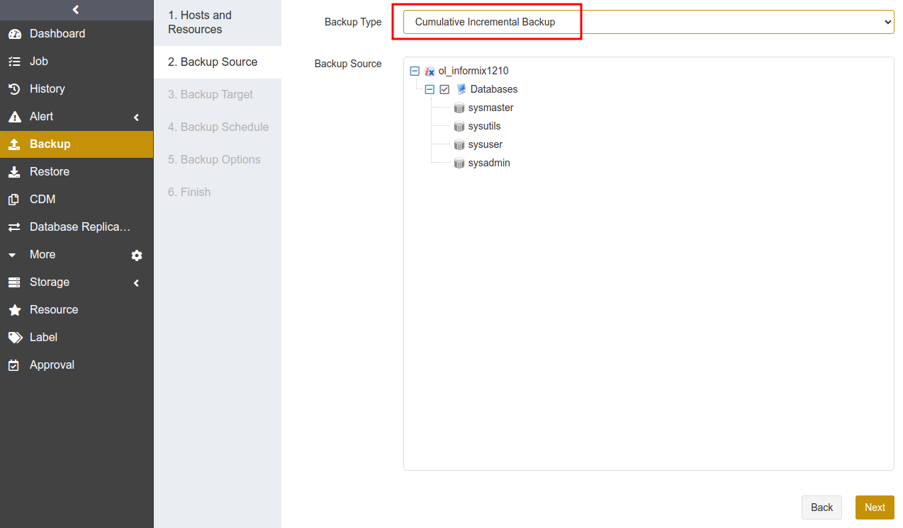
Note:
If the database has never been fully backed up, or has not been fully backed up after restore, the first cumulative incremental backup will be run as a full backup by default.
Create Log Backup Jobs#
Informix log backup is created based on a full backup. It backs up the current logical logs and other full logical logs.
Creating a log backup job is the same as creating a full backup job. Select Log as the backup type.
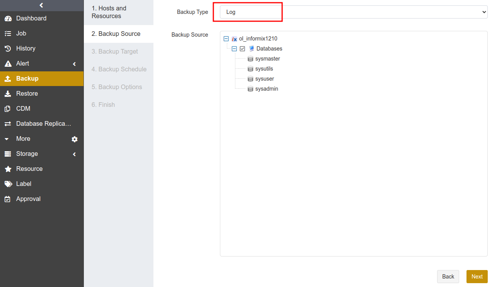
Note:
If the database has never been fully backed up, or has not been fully backed up after the restore, run a full backup job before the log backup job.
To perform the restore job successfully, it is required that full backups and log backups are in the same storage pool.
When a log backup job is running, the Agent modifies onconfig file parameter LTAPEDEV to a value other than /dev/null.
When a single logical log file is full, this log file will not be automatically marked as backed up. When all logical logs are full and no log backup has been performed since the last backup, the database will hang and become inaccessible. It is recommended that you set the log backup execution cycle according to the speed at which logical logs are generated to avoid database from crashing.
Create Automatic Archiving Log Backup Jobs#
When logical logs are full or when you manually execute log switch command, automatic archiving log backups are performed automatically to back up the current logical logs.
Creating an automatic archiving log backup job is the same as creating a full backup job. Select On Demand as the backup type.

Note:
Run a full backup job before the first automatic archiving log backup job.
It is not supported to run an automatic archiving log backup job and a log backup job on the same instance.
Informix version 11.50 configures On-Bar and restarts the instance when the automatic archiving log backup job is running.
Create Restore Jobs#
This chapter introduces how to restore Informix databases. ADPS provides a variety of restore types including timepoint restore, full recovery testing, and continuous recovery testing.
Prerequisites#
A backup job has been completed. See Create Backup Jobs.
To restore to another host, it is required to install the agent on that host, activate its license and assign the authorization.
Create Timepoint Restore Jobs#
When a logical error or a disaster occurs in an Informix database, you can use timepoint restore to restore the database to a specified point-in-time state. Informix timepoint restore supports restoring to the source host or a different host.
(1) Select the Informix database host and instance, and click Next.
(2) Select Timepoint Restore as the restore type, select the backup set and the specific point in time by dragging the slider control.
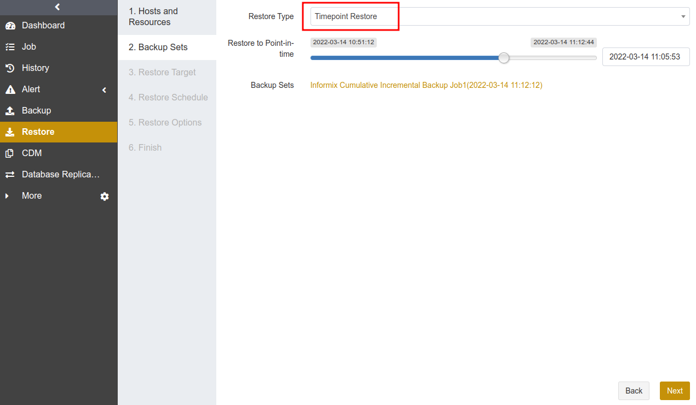
(3) Set Restore Target. You can select the source host or a different host as the restore target. Click Next.
Source host: The Restore Target page selects the source host by default.
Different host: You can restore to a different host, which requires the same informix version, same instance name, and same path.
(4) Set Restore Schedule. It only supports immediate and one-time restore schedules.
(5) Set Restore Options. You can set backup tail-log in the common options, and set reconnection time, resumption buffer size, speed limit, precondition, pre action, post action and serial restore in the advanced options.
Backup tail-log: Backup tail-log is the process of backing up logical log files from disks to storage media before a restore job is executed.
In case the database instance fails and some logical log data have not yet been backed up to the storage media, it is necessary to enable this option to back up the logical log data if you restore the instance to the point in time of failure.
Log backup is based on a full backup. If you have not executed a full backup job after the restore is completed, disable this option when you execute a restore operation again.
Serial restore: Set BAR_MAX_BACKUP=1 to start only one thread at each restore. When a restore job requires multiple backup sets that use different channel number, the restore job has the possibility to fail. In this case it is recommended to enable Serial Restore.
(6) Confirm the job information. Click Submit.
Create Full Recovery Testing Jobs#
With the hourly, daily, weekly, or monthly schedule, you can use full recovery testing to recover the latest Informix backup set to the specified target host and and verify that the backup set is available.
(1) Select the Informix database host and instance. Click Next.
(2) Select Full Recovery Testing as the restore type. This restore type does not require selecting a backup set point in time, because it will restore the latest backup set of the source host when it is executed.
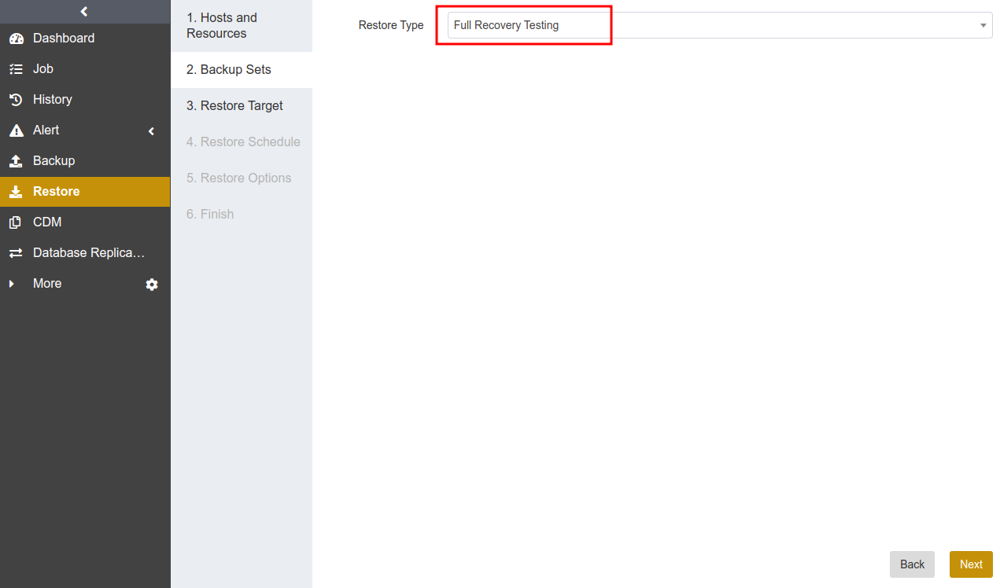
(3) Select Restore Target. The source instance cannot be selected as the restore target. The selected restore target requires that the database version, instance name, and storage path are consistent with those of the source database. Click Next.
(4) Set Restore Schedule. It supports hourly, daily, weekly, and monthly schedule types. Click Next.
(5) Set Restore Options including reconnection time, speed limit, pre action, and post action. Click Next.
(6) Confirm the job information. Click Submit.
Create Continuous Log Recovery Testing Jobs#
Continuous recovery testing allows you to create periodic log recovery testing jobs that apply the latest logical log files from the Informix host to the target instance synchronously.
(1) Select the Informix database host and instance, and click Next.
(2) Select Continuous Recovery Testing as the restore type. This restore type does not require selecting a backup set point in time, because it will restore the latest backup set of the source host when it is executed.

(3) Select Restore Target. The source instance cannot be selected as the restore target. The selected restore target requires that the database version, instance name, and storage path are consistent with those of the source database. Click Next.
(4) Set Restore Schedule. It supports hourly, daily, weekly, and monthly schedule types. Click Next.
(5) Set Restore Options including reconnection time, speed limit, pre action, and post action. Click Next.
(6) Confirm the job information. Click Submit.
Note:
When you submit a continuous log recovery testing job, the page will pop up a window to confirm your submission. See below:
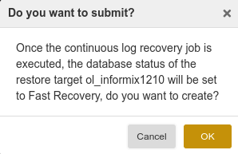
When you restore the latest logical log backup set from the Informix host to the specified target host, database on the target host will be in a “Fast Recovery” state, which prevents the database from querying data. In this case you can restore the database on the target host to an “On-Line” state by disabling the continuous log recovery testing.
Manage Jobs#
On the Job interface, you can view the backup and restore job information of all agents, start, modify, clone, and delete the jobs.
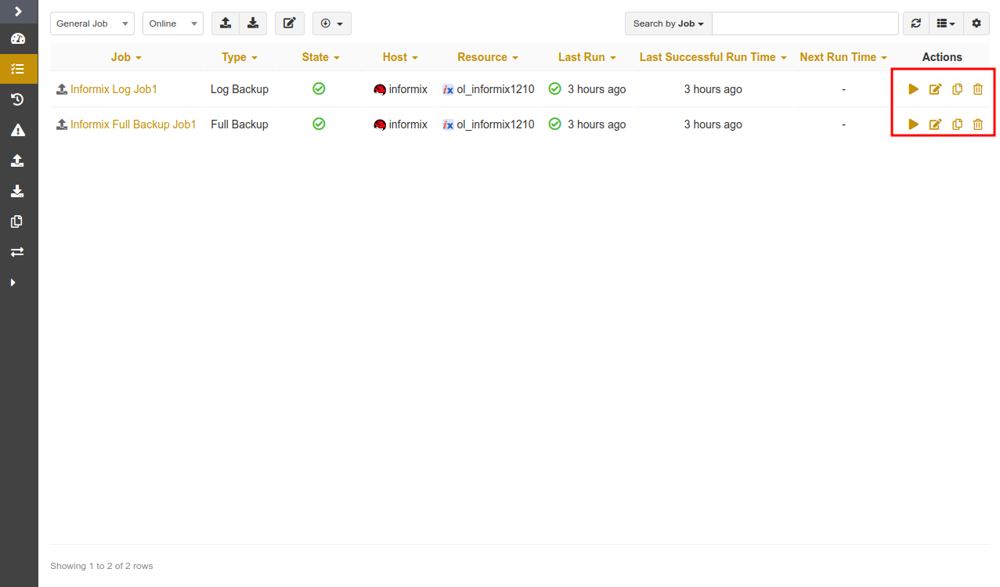
Start: Click
 to start the job immediately.
to start the job immediately.Modify: Click
 to modify the basic job information, the backup/restore schedule, and the backup/restore options.
to modify the basic job information, the backup/restore schedule, and the backup/restore options.Clone: Click
 to create multiple similar backup jobs.
to create multiple similar backup jobs.Delete: Click
 to access the confirmation window. Click OK to delete the job.
to access the confirmation window. Click OK to delete the job.
Backup Protection Strategy#
Backup Schedule Operation#
ADPS provides six types of backup schedules. The schedule type selected is only valid for the currently created job.

Immediate: The job immediately starts to run after it is submitted.
One time: After the job is created, it will be in an idle state and start to run when the specified Start time is reached.
Hourly: After the job is created, the first run will be initiated at the specified Start Time. The next run will be executed after a specified number of hours/minutes within the time range according to the setting. If the unit is Hour, then you can set the value from 1 to 24. If you select the Minute as the unit, then you can set the value from 1 to 60.
Daily: After the job is created, the first run will be initiated at the specified Start Time. The next run will be executed after a specified number of days according to the setting. The value is an integer between 1 and 5.
Weekly: After the job is created, the first run will be initiated at the specified Start Time. The next run will be executed after a specified number of weeks according to the setting. You can specify which day of the week to run the job.
Monthly: The job runs on the specified days of some months at the specified time. For example, you can set the job to run on January 1 and June 1 at 20:00. Or you can set it to run on the first Monday of every month at 20:00.
Example: Perform the job every two weeks on Friday at 18:00
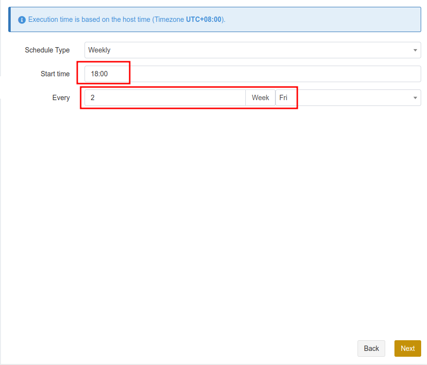
The actual execution time is:
If the current time is Friday 17:00, the run time is Friday 18:00 (the current day).
If the current time is Thursday 17:00, the run time is Friday 18:00 (the next day).
If the current time is Saturday 17:00, the run time will be next Friday 18:00.
After the first run is completed, the job will start automatically at 18:00 on Friday every two weeks.
Backup Strategy Advice#
There are six methods to back up Informix: full backup, incremental backup, cumulative incremental backup, log backup, and automatic archiving log backup. Full backup, incremental backup, cumulative incremental backup, and log backup can be used together. It is recommended to formulate the following backup strategy according to different situations such as network bandwidth, business data volume, security requirements, and the amount of lost data that you can tolerate.
When the application traffic is relatively small, run a Full Backup once a week to ensure that you have at least one recoverable RTO every week.
After that, you can run an Cumulative Incremental Backup every day to reduce the backup time and ensure that you have at least one recoverable RPO every day.
It’s recommended that you set the cycle of log backup jobs based on the speed at which logical logs are generated.
Note:
Avoid using the strategies of all full backups or a full backup followed by cumulative incremental or log backups.
Configure the Agent Access Mode#
The Agent supports using ODBC and DBACCESS to access the databases.
If you have installed Informix CSDK (Client Software Development Kit), ODBC access mode will be used by default.
If Informix CSDK (Client Software Development Kit) is not installed, you can use the DBACCESS access mode.
Refer to the following steps to configure DBACCESS for different OS.
Configure DBACCESS on Linux
> /etc/init.d/adps-agent config informix Detected Informix home: /opt/informix Your Choice: /opt/informix Enter access mode (ODBC or DBACCESS):DBACCESS Stopping adps-agent [ OK ] Starting adps-agent [ OK ]
Verify the successful configuration:
> cat /etc/opt/aurreum/adps/agent/conf.d/informix.conf INFORMIX_DIR=/opt/informix INFORMIX_LD_LIBRARY_PATH=/opt/informix/lib # mode: DBACCESS or ODBC INFORMIX_ACCESS_MODE=DBACCESS
Configure DBACCESS on Windows
If CSDK is not installed, DBACCESS will be used automatically. The corresponding InformixAccess registry entries are as follows:
## Add Registry HKEY_LOCAL_MACHINE\SOFTWARE\aurreum\adps\agent\InformixAccess #String value DBACCESS
Channel Number Configuration#
Channel number for backup jobs
Informix supports up to 255 channels. You can set the number of channels for backup and restore jobs according to the actual environment. A reasonable number can improve job performance. On-Bar backs up dbspace. If the channel number exceeds the dbspace number, the exceeded channel number will not take effect.
Channel number for restore jobs
The channel number for a restore job is the same as that for the backup job. The restore page does not have the Channel option by default.
Limitations#
Function |
Limitations |
|---|---|
Restore |
The target database version number, instance name, and data storage path are required to be the same as those of the source database. |
Glossary#
Term |
Description |
|---|---|
Fast compression |
Compress data during backup using fast compression algorithms. |